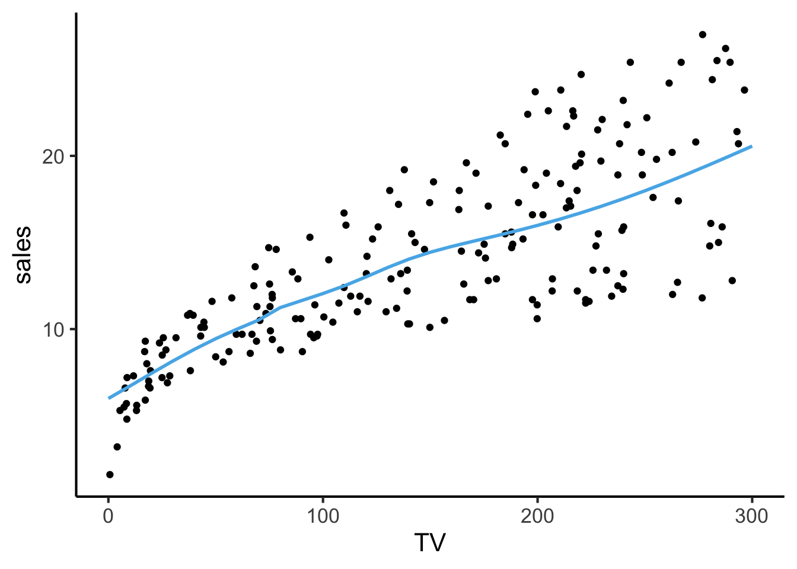

Code
source("../../dsan-globals/_globals.r")DSAN 5300: Statistical Learning
source("../../dsan-globals/_globals.r")nnet in RSince the ISLR lab within the Deep Learning chapter uses R’s keras library rather than nnet1, here are some quick examples of how nnet works that may help you get started on the R portion of Lab 9.
Here we’ll load the Advertising.csv dataset used in the beginning of ISLR:
library(tidyverse) |> suppressPackageStartupMessages()
ad_df <- read_csv("https://www.statlearning.com/s/Advertising.csv", show_col_types = FALSE)New names:
• `` -> `...1`colnames(ad_df) <- c("id", colnames(ad_df)[2:5])
ad_df |> head()| id | TV | radio | newspaper | sales |
|---|---|---|---|---|
| 1 | 230.1 | 37.8 | 69.2 | 22.1 |
| 2 | 44.5 | 39.3 | 45.1 | 10.4 |
| 3 | 17.2 | 45.9 | 69.3 | 9.3 |
| 4 | 151.5 | 41.3 | 58.5 | 18.5 |
| 5 | 180.8 | 10.8 | 58.4 | 12.9 |
| 6 | 8.7 | 48.9 | 75.0 | 7.2 |
A scatterplot of TV vs. sales looks as follows:
ad_df |> ggplot(aes(x = TV, y = sales)) +
geom_point() +
theme_dsan()
Here we use lm(), also used near the beginning of ISLR, to obtain OLS estimates of the coefficients relating TV, radio, and newspaper to sales:
reg_model <- lm(
sales ~ TV + radio + newspaper,
data=ad_df
)
print(summary(reg_model))
Call:
lm(formula = sales ~ TV + radio + newspaper, data = ad_df)
Residuals:
Min 1Q Median 3Q Max
-8.8277 -0.8908 0.2418 1.1893 2.8292
Coefficients:
Estimate Std. Error t value Pr(>|t|)
(Intercept) 2.938889 0.311908 9.422 <2e-16 ***
TV 0.045765 0.001395 32.809 <2e-16 ***
radio 0.188530 0.008611 21.893 <2e-16 ***
newspaper -0.001037 0.005871 -0.177 0.86
---
Signif. codes: 0 '***' 0.001 '**' 0.01 '*' 0.05 '.' 0.1 ' ' 1
Residual standard error: 1.686 on 196 degrees of freedom
Multiple R-squared: 0.8972, Adjusted R-squared: 0.8956
F-statistic: 570.3 on 3 and 196 DF, p-value: < 2.2e-16While we can’t really “fully” visualize the model in 2D or even 3D (since there are 3 features and 1 label, which would require a 4D visualization), we can still obtain a helpful 2D visualization that broadly resembles the above visualization of TV vs. sales.
To achieve this, we freeze two of the feature values (radio and newspaper) at their means and then plot what our model says about the relation between TV and sales at these held-constant radio and newspaper values:
# "Freeze" radio and newspaper values at their means
radio_mean <- mean(ad_df$radio)
news_mean <- mean(ad_df$newspaper)
# Define the range of TV values over which we want to plot predictions
TV_vals <- seq(0, 300, 10)
# Extract all coefficients from our model
reg_coefs <- reg_model$coef
# For every value v in TV_vals, compute prediction
# yhat(v, radio_mean, news_mean)
get_prediction <- function(TV_val) {
intercept <- reg_coefs['(Intercept)']
TV_term <- reg_coefs['TV'] * TV_val
radio_term <- reg_coefs['radio'] * radio_mean
news_term <- reg_coefs['newspaper'] * news_mean
return(intercept + TV_term + radio_term + news_term)
}
# Compute predictions for each value of TV_vals
pred_df <- tibble(TV=TV_vals) |> mutate(
sales_pred = get_prediction(TV)
)
ggplot() +
geom_point(data=ad_df, aes(x=TV, y=sales)) +
geom_line(
data=pred_df, aes(x=TV, y=sales_pred),
linewidth=1, color=cb_palette[2]
) +
theme_dsan()
nnet for (Simple) NN Model WeightsHere, the reason I put “(Simple)” is because, for example, nnet only supports networks with either (a) no hidden layers at all, or (b) a single hidden layer.
Here, to show you how to fit NN models using nnet (without giving away the full code required for this part of the lab), I am using just the default parameter settings for the nnet() function—on the Lab itself you’ll need to read the instructions more carefully and think about how to modify this code to achieve the desired result.
library(nnet)
nn_model <- nnet(
sales ~ TV + radio + newspaper,
size=10,
linout=TRUE,
data=ad_df
)# weights: 51
initial value 52680.989030
iter 10 value 4003.592232
iter 20 value 3556.990620
iter 30 value 3277.830385
iter 40 value 2693.332152
iter 50 value 1442.629937
iter 60 value 713.350821
iter 70 value 419.466340
iter 80 value 314.564890
iter 90 value 202.253371
iter 100 value 84.217076
final value 84.217076
stopped after 100 iterationsnn_modela 3-10-1 network with 51 weights
inputs: TV radio newspaper
output(s): sales
options were - linear output units From the second part of the output (the output from just the line nn_model), you should think through why it’s called a “3-10-1 network”, and then why this architecture would require estimating 51 weights.
To visualize what’s happening, we can take the same approach we took in the previous visualization: see what our NN predicts for sales across a range of TV values, with radio and newspaper held constant at their means.
First, note that R’s predict() function takes in (1) a fitted model and (2) a data.frame where each row is a vector of values you want to generate a prediction for. So, for example, we can obtain a single prediction for a specific set of TV, radio, and newspaper values like:
predict(nn_model, data.frame(TV=10, radio=23, newspaper=30)) [,1]
1 6.698056So, for ease-of-use with this predict() functionality, we first construct a tibble where each row represents a tuple (TV_val, radio_mean, news_mean):
nn_input_df <- data.frame(TV=TV_vals, radio=radio_mean, newspaper=news_mean)
as.data.frame(nn_input_df)And now, by plugging this tibble into predict(), we obtain our NN’s prediction for the inputs in each row:
nn_pred_df <- nn_input_df
nn_pred_df$sales_pred <- predict(nn_model, nn_input_df)
as.data.frame(nn_pred_df)Which we can visualize using the same approach we used for the linear model above (the non-linearity is subtle, but we can see the line varying in a way that a straight line \(y = mx + b\) would not!)
ggplot() +
geom_point(data=ad_df, aes(x=TV, y=sales)) +
geom_line(
data=nn_pred_df, aes(x=TV, y=sales_pred),
linewidth=1, color=cb_palette[2]
) +
theme_dsan()
Keras is a more complex, heavy-duty neural network library, but for the purposes of the lab (showing how models like logistic regression can be “reconceptualized” as simple neural networks) the simpler nnet library has a less-steep learning curve!↩︎